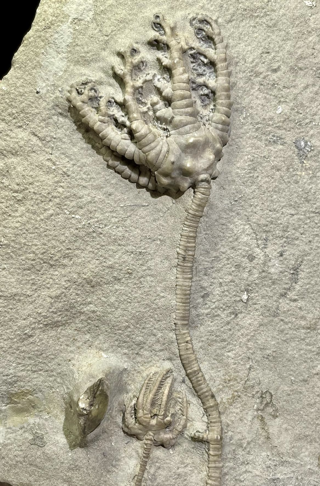

1. Barycrinus stellatus
2. Agaricocrinus americanus
• Mississippian
• Edwardsville Formation
• Crawfordsville, Indiana, USA
Size: 4 cm crown for the Barycrinus
A classic Crawfordsville crinoid. Barycrinus has very distinctive "kinked" tapering arms which givesthe crown a claw-like appearance. B. stellatus in particular has a relatively shallow calyx with characteristic bumps or nodes. This is not a rare species from the Edwardsville, but not common with such fine preservation and preparation of the pinnules. Also on the plate is a cute little baby Agaricocrinus americanus, another classic Crawfordsville crinoid.
|

|